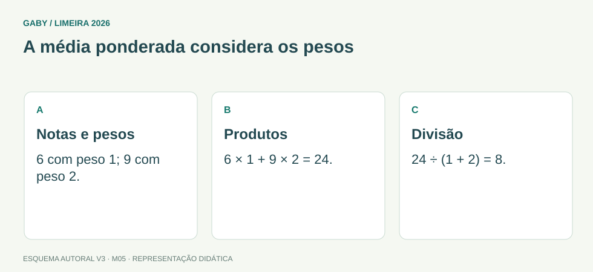

Objetivos do módulo
- Calcular média aritmética simples.
- Calcular média ponderada com pesos.
- Usar a média para encontrar total ou valor faltante.
- Atualizar a média ao incluir, retirar, substituir ou corrigir valores.
- Usar desvios e transformações (somar ou multiplicar por uma constante) para achar médias sem refazer toda a conta.
- Resolver médias ponderadas com peso zero, pesos percentuais, peso desconhecido e nota necessária.
- Calcular a média conjunta de grupos, a média com frequências, o custo médio e a produção média.
- Estimar a média de dados agrupados, calcular o valor esperado e arredondar médias.
A média ponderada considera os pesos

Descrição em texto do esquema
- Notas e pesos: 6 com peso 1; 9 com peso 2.
- Produtos: 6 × 1 + 9 × 2 = 24.
- Divisão: 24 ÷ (1 + 2) = 8.
Oficina visual · aplique o esquema
Calcule a média de 5 e 8 com pesos 2 e 3.
Atividade autoral complementar da V3. Registre sua resposta; a resolução está no arquivo de gabarito e revisão.
1. Média simples
Média aritmética = soma dos valores ÷ quantidade. Ela representa um ponto de equilíbrio. Se a média de 5 valores é 8, a soma deve ser 40.
2. Média ponderada
Quando valores têm pesos diferentes, multiplique cada valor pelo peso, some os produtos e divida pela soma dos pesos. Não divida apenas pela quantidade de notas.
3. Média e total
Total = média × quantidade. Essa identidade é especialmente útil em problemas que informam média e pedem um valor ausente.
4. Cuidados de interpretação
Média não é mediana nem moda. Além disso, a média pode ser um valor que não aparece nos dados. Em notas, verifique se o enunciado usa pesos.
Aprofundamento 1 — Soma, quantidade e média simples
A média aritmética simples de uma lista é a soma de todos os valores dividida pela quantidade de valores. Todos os valores entram na conta. Um valor zero não muda a soma, mas conta na quantidade. Um valor negativo entra com o seu sinal.
Zeros e negativos
Temperaturas de −3 °C, 0 °C, 5 °C e 6 °C: soma = −3 + 0 + 5 + 6 = 8; quantidade = 4; média = 8 ÷ 4 = 2 °C. Dividir por 3, ignorando o zero, daria cerca de 2,67 °C, que está errado.
Soma = média × quantidade
Da definição sai a relação mais usada em prova: soma = média × quantidade. Ela funciona nos dois sentidos:
- conhecendo a média e a quantidade, acha-se a soma: média 7 em 12 valores dá soma 7 × 12 = 84;
- conhecendo a soma e a média, acha-se a quantidade: soma 84 e média 7 dão 84 ÷ 7 = 12 valores.
Não é preciso conhecer os valores um a um. Se uma lista de 4 números soma 50 e outra de 6 números soma 70, a lista com os 10 números soma 120 e tem média 120 ÷ 10 = 12.
Com a soma fixa, mais termos significam média menor. A soma 90 repartida em 5 termos dá média 18; em 9 termos, média 10. A razão entre essas médias é 18 : 10 = 9 : 5, o inverso da razão entre as quantidades (5 : 9).
Média de apenas parte dos dados
Quando a regra manda descartar valores ou usar apenas alguns deles, primeiro selecione os valores que entram. Depois divida pela quantidade de valores usados, não pela quantidade original.
- Notas 3, 6, 8, 9 e 10, com descarte da menor nota: sobram 6, 8, 9 e 10; média = 33 ÷ 4 = 8,25.
- Vendas diárias 45, 58, 30, 62 e 51, média dos três maiores valores: entram 62, 58 e 51; média = 171 ÷ 3 = 57. A média dos cinco dias seria outra: 246 ÷ 5 = 49,2.
A média fica entre o menor e o maior valor
A média nunca é menor que o menor valor nem maior que o maior valor da lista. Ela só coincide com um dos extremos quando todos os valores são iguais. Mas os extremos sozinhos não determinam a média: os valores do meio também contam. As listas 3, 4, 5, 11 e 3, 10, 11, 11 têm o mesmo mínimo (3) e o mesmo máximo (11), e médias diferentes: 23 ÷ 4 = 5,75 e 35 ÷ 4 = 8,75.
Aprofundamento 2 — Quando a lista muda: incluir, retirar, substituir ou corrigir
Sempre que a lista muda, trabalhe com a soma. Calcule a soma antiga (média antiga × quantidade antiga), a nova soma (nova média × nova quantidade) e compare as duas.
| Mudança na lista | Nova soma | Nova quantidade |
|---|---|---|
| Incluir um valor v | soma antiga + v | n + 1 |
| Retirar um valor v | soma antiga − v | n − 1 |
| Substituir o valor a pelo valor b | soma antiga − a + b | n (não muda) |
| Corrigir um registro: trocar o valor errado e pelo valor correto c | soma antiga − e + c | n (não muda) |
Incluir um valor
Seis valores têm média 9 (soma 54). Inclui-se um sétimo valor e a nova média passa a 10. A nova soma é 7 × 10 = 70; o valor incluído é 70 − 54 = 16. Para a média subir, o valor incluído precisa ser maior que a média antiga (aqui, 16 é maior que 9).
Se a quantidade anterior é desconhecida, chame-a de n e monte a equação. Uma lista tem média 9; incluído o valor 25, a média passa a 11. Então 9n + 25 = 11(n + 1). Daí 25 − 11 = 11n − 9n, ou seja, 14 = 2n e n = 7. Havia 7 termos antes da inclusão; depois, 8. Leia com cuidado qual das duas quantidades foi pedida.
Em grupo grande, um valor sozinho muda pouco a média. Um grupo de 40 pessoas tem idade média de 30 anos (soma 1.200). Entra uma pessoa de 71 anos: nova média = 1.271 ÷ 41 = 31 anos.
Inclusões que não alteram a média
Incluir um valor igual à média não a altera. Se a média é m, a soma passa de n × m para n × m + m = (n + 1) × m, e a divisão por n + 1 volta a dar m. O mesmo vale para incluir um grupo de valores cuja média é igual à da lista: numa lista de média 16, acrescentar 10 e 22 (média 16) mantém a média 16, qualquer que seja o tamanho da lista.
Retirar um valor
Dez números têm média 8 (soma 80). Retira-se o número 26. Restam 80 − 26 = 54 em nove números: nova média = 54 ÷ 9 = 6.
Substituir um valor
Cinco valores têm média 12 (soma 60). Um valor 7 é trocado por x e a média passa a 14 (nova soma 70). A troca acrescentou 70 − 60 = 10 à soma; logo x = 7 + 10 = 17.
Corrigir um erro de registro
Oito medições tiveram média 30 (soma 240). Descobre-se que uma medição de 25 foi registrada como 45. O valor errado colocou 45 − 25 = 20 a mais na soma. Para corrigir a soma: 240 − 20 = 220. Média correta = 220 ÷ 8 = 27,5. A quantidade de medições não muda.
Aprofundamento 3 — Desvios e transformações dos dados
Os desvios em relação à média somam zero
Desvio de um valor é a diferença entre o valor e a média. Valores acima da média têm desvio positivo; abaixo, negativo. A soma de todos os desvios é sempre zero: os positivos e os negativos se anulam. Isso não quer dizer que cada desvio seja zero.
Exemplo: 4, 7, 9 e 12 têm média 32 ÷ 4 = 8. Os desvios são −4, −1, +1 e +4, e a soma deles é 0.
Uso em prova: cinco medidas têm média 20. Quatro delas estão 3 acima, 5 abaixo, 6 acima e 1 abaixo da média. Os desvios conhecidos somam +3 − 5 + 6 − 1 = +3. O quinto desvio precisa ser −3 para a soma dar zero; a quinta medida é 20 − 3 = 17. Conferência: 23 + 15 + 26 + 19 + 17 = 100 = 5 × 20.
Somar ou multiplicar por uma constante
Somar uma constante a todos os valores soma essa constante à média. Multiplicar todos os valores por uma constante multiplica a média por ela, inclusive o sinal. Exemplo com seis valores de média 11:
| Cada valor é… | Nova média | Por quê |
|---|---|---|
| somado a 5 | 11 + 5 = 16 | a soma aumenta 6 × 5 e a quantidade continua 6 |
| diminuído de 2 | 11 − 2 = 9 | a soma diminui 6 × 2 |
| multiplicado por 2 | 2 × 11 = 22 | a soma inteira fica multiplicada por 2 |
| multiplicado por −2 | −2 × 11 = −22 | o sinal da constante passa para a média |
| multiplicado por 3 e depois somado a 1 | 3 × 11 + 1 = 34 | aplique as operações à média, na mesma ordem |
Média da soma e média do produto
Uma loja anotou, em cada um dos 5 dias úteis da semana, quanto vendeu no balcão e quanto vendeu pela internet. A média diária foi R$ 320 no balcão e R$ 180 pela internet. Qual é a média do total vendido por dia? A soma dos totais diários é tudo o que se vendeu no balcão (5 × 320 = 1.600) mais tudo o que se vendeu pela internet (5 × 180 = 900), ou seja, 2.500. Dividindo pelos mesmos 5 dias: 2.500 ÷ 5 = 500 = 320 + 180. Ao somar termo a termo (dia com dia) duas listas com o mesmo número de termos, a média da soma é a soma das médias. O mesmo vale para a diferença: a vantagem diária do balcão sobre a internet tem média 320 − 180 = 140.
Com produtos isso não vale. X = (1, 5) e Y = (2, 6) têm médias 3 e 4, cujo produto é 12. Os produtos termo a termo são 2 e 30, com média 16. Trocando a ordem de Y para (6, 2), os produtos são 6 e 10, com média 8. A média dos produtos depende de como os valores são emparelhados; só as médias não bastam.
Aprofundamento 4 — Média ponderada: pesos, incógnitas e nota necessária
Regra: média ponderada = soma de (valor × peso) ÷ soma dos pesos. Os casos abaixo são os que mais aparecem em prova.
Pesos em porcentagem
Prova com peso de 60%, trabalho com 25% e participação com 15%; notas 7, 9 e 10. Os pesos somam 100% = 1, então basta somar as contribuições: 7 × 0,60 + 9 × 0,25 + 10 × 0,15 = 4,2 + 2,25 + 1,5 = 7,95. Se os pesos em porcentagem não somarem 100%, divida pela soma deles.
Peso zero
Um valor com peso zero não entra no numerador nem no denominador. Notas 6, 8 e 3 com pesos 2, 3 e 0: (6 × 2 + 8 × 3 + 3 × 0) ÷ (2 + 3 + 0) = 36 ÷ 5 = 7,2. Dar peso zero é diferente de dar peso 1.
Só a proporção entre os pesos importa
Multiplicar todos os pesos pelo mesmo número não muda a média, porque o numerador e o denominador ficam multiplicados pelo mesmo fator. Valores 5, 8 e 10 com pesos 1, 2 e 2: (5 + 16 + 20) ÷ 5 = 8,2. Com pesos 3, 6 e 6 (o triplo de cada um): (15 + 48 + 60) ÷ 15 = 8,2.
Mudar apenas um peso, ao contrário, muda a média. Os valores 3 e 9 com pesos iguais têm média 6. Triplicando só o peso do 9, a média vai a (3 + 27) ÷ 4 = 7,5.
A média ponderada fica entre os valores
Com todos os pesos positivos, a média ponderada fica estritamente entre o menor e o maior valor e se aproxima do valor de maior peso. Com os valores 3 e 9 e pesos positivos, a média pode ser qualquer número maior que 3 e menor que 9. Chegar a 9 exigiria peso zero para o 3.
Peso ou nota desconhecida: monte a equação
Escreva a definição com a incógnita no lugar do dado que falta e resolva a equação do 1º grau.
- Peso desconhecido. Nota 5 com peso 3 e nota 10 com peso p; média 8. Equação: (15 + 10p) ÷ (3 + p) = 8. Então 15 + 10p = 24 + 8p, 2p = 9 e p = 4,5.
- Razão entre os pesos. Valores 4 e 12, média ponderada 10, pesos a e b. Equação: 4a + 12b = 10(a + b). Então 2b = 6a e a : b = 1 : 3. Atalho: o peso de cada valor é proporcional à distância entre a média e o outro valor. Peso do 4: 12 − 10 = 2; peso do 12: 10 − 4 = 6; 2 : 6 = 1 : 3.
- Notas ligadas. Pesos 1 e 4; a segunda nota supera a primeira em 3; média 8,4. Com a primeira nota igual a x: [x + 4(x + 3)] ÷ 5 = 8,4. Então 5x + 12 = 42, x = 6, e a segunda nota é 9.
Nota necessária para alcançar uma média
Para achar a nota mínima, use a média exigida para calcular a soma necessária e subtraia o que já foi obtido.
- Pesos iguais. Três provas, média exigida 7; notas já obtidas 6 e 7,5. Soma necessária: 3 × 7 = 21. Falta 21 − 13,5 = 7,5 na terceira prova.
- Com pesos. Nota 5,5 com peso 2 e uma prova de peso 3 ainda por fazer; média de pelo menos 7. Condição: (5,5 × 2 + 3x) ÷ 5 ≥ 7. Então 11 + 3x ≥ 35, 3x ≥ 24 e x ≥ 8. A nota mínima é 8, o valor de fronteira.
Maior e menor média possíveis
Quando as notas têm limite (de 0 a 10, por exemplo), a maior média possível vem de colocar todas as notas desconhecidas no máximo; a menor, no mínimo. Cinco notas de 0 a 10, três conhecidas: 6, 7 e 8 (soma 21). Maior média possível: (21 + 10 + 10) ÷ 5 = 8,2. Menor: (21 + 0 + 0) ÷ 5 = 4,2. Uma média exigida acima de 8,2 é impossível de alcançar.
Aprofundamento 5 — Grupos, frequências, custo médio e produção média
Média conjunta de grupos de tamanhos diferentes
Para juntar grupos, some as somas e divida pelo total de elementos. A média conjunta é uma média ponderada das médias dos grupos, com as quantidades como pesos. A média simples das médias só dá o resultado certo quando os grupos têm o mesmo tamanho.
Turma A: 20 alunos, média 6,5 (soma 130). Turma B: 30 alunos, média 8 (soma 240). Média conjunta = (130 + 240) ÷ 50 = 370 ÷ 50 = 7,4. A média das médias, (6,5 + 8) ÷ 2 = 7,25, ignora que B tem mais alunos. A média geral fica mais perto da média do grupo maior.
Tamanho de grupo desconhecido: o grupo A tem 15 pessoas e média 40; o grupo B tem x pessoas e média 50; a média geral é 44. Equação: (15 × 40 + 50x) ÷ (15 + x) = 44. Então 600 + 50x = 660 + 44x, 6x = 60 e x = 10 pessoas.
Tabela de frequências
Frequência é o número de vezes que cada valor aparece. Na média, a frequência funciona como peso: multiplique cada valor pela sua frequência, some os produtos e divida pela frequência total.
| Filhos por família | Frequência | Valor × frequência |
|---|---|---|
| 1 | 5 | 5 |
| 3 | 2 | 6 |
| 4 | 3 | 12 |
| Total | 10 | 23 |
Média = 23 ÷ 10 = 2,3 filhos por família. Com frequências relativas (0,5; 0,2 e 0,3, que somam 1), a conta dá o mesmo: 1 × 0,5 + 3 × 0,2 + 4 × 0,3 = 2,3.
Consequência: repetir todos os valores o mesmo número de vezes não muda a média. A lista 2, 4, 9 tem média 5. Repetindo cada valor duas vezes (2, 2, 4, 4, 9, 9), a soma dobra (30) e a quantidade também (6): a média continua 5.
Custo médio, velocidade média e produção média: total ÷ total
Preço por quilo, quilômetros por hora e peças por hora são razões entre duas grandezas. A média delas é o total de uma dividido pelo total da outra; as quantidades ou os tempos funcionam como pesos.
- Custo médio. 3 kg a R$ 20,00 o quilo e 5 kg a R$ 12,00 o quilo. Custo total: 60 + 60 = R$ 120,00. Massa total: 8 kg. Custo médio: 120 ÷ 8 = R$ 15,00 por quilo, e não R$ 16,00, que seria a média simples dos dois preços.
- Velocidade média. 2 h a 90 km/h e 1 h a 60 km/h. Distância total: 180 + 60 = 240 km. Tempo total: 3 h. Velocidade média: 240 ÷ 3 = 80 km/h.
- Produção média. 4 h a 50 peças por hora e 1 h a 100 peças por hora. Total: 200 + 100 = 300 peças em 5 h, ou seja, 60 peças por hora.
Aprofundamento 6 — Dados agrupados, valor esperado e arredondamento
Dados agrupados em classes: o ponto médio
Às vezes a tabela informa só quantos dados caem em cada intervalo (classe), sem os valores individuais. Para estimar a média, cada classe é representada pelo seu ponto médio, (limite inferior + limite superior) ÷ 2, e a frequência da classe é o peso. O resultado é uma estimativa, não a média exata.
| Classe | Ponto médio | Frequência | Ponto médio × frequência |
|---|---|---|---|
| de 0 a menos de 10 | 5 | 3 | 15 |
| de 10 a menos de 20 | 15 | 5 | 75 |
| de 20 a menos de 40 | 30 | 2 | 60 |
| Total | — | 10 | 150 |
Média estimada = 150 ÷ 10 = 15.
Valor esperado
Uma variável aleatória discreta X assume certos valores, cada um com uma probabilidade. O valor esperado (ou esperança) de X, indicado por E(X), é a média ponderada desses valores, com as probabilidades como pesos: E(X) = x1 × P(x1) + x2 × P(x2) + … As probabilidades somam 1, por isso não é preciso dividir.
Exemplo: um sorteio paga R$ 0 com probabilidade 0,6, R$ 10 com probabilidade 0,3 e R$ 50 com probabilidade 0,1. E(X) = 0 × 0,6 + 10 × 0,3 + 50 × 0,1 = 0 + 3 + 5 = R$ 8. O valor esperado é uma média de longo prazo e não precisa ser um dos valores possíveis.
Arredondamento da média
Regra usual: olhe o primeiro algarismo que será descartado. Se for 0, 1, 2, 3 ou 4, o último algarismo mantido não muda; se for 5, 6, 7, 8 ou 9, ele aumenta 1. A média 26 ÷ 3 = 8,666… fica 8,7 com uma casa decimal e 8,67 com duas.
Arredonde só no final. Dados já arredondados podem mudar a soma e, portanto, a média. Os valores 3,4; 5,4 e 6,4 têm média 15,2 ÷ 3 ≈ 5,07. Arredondados para inteiros (3, 5 e 6), dão média 14 ÷ 3 ≈ 4,67.
Aprofundamento 7 — Mais exemplos resolvidos
Nota mínima no último bimestre
Situação: Quatro bimestres têm pesos 1, 2, 3 e 4. As notas dos três primeiros foram 6, 7 e 5. A aprovação exige média ponderada de pelo menos 6. Qual é a menor nota possível no 4º bimestre?
Planilha corrigida e completada
Situação: Nove despesas têm média de R$ 150,00. Uma despesa de R$ 120,00 foi lançada como R$ 210,00, e ainda falta incluir uma despesa de R$ 340,00. Qual é a média final?
Duas filiais, abono e reajuste
Situação: A filial A tem 8 funcionários com salário médio de R$ 2.500,00; a filial B tem 12 funcionários com salário médio de R$ 3.000,00. Todos recebem um abono de R$ 200,00 e, depois, um reajuste de 10% sobre o novo valor. Qual é o novo salário médio das duas filiais juntas?
Mistura com quantidade desconhecida
Situação: Misturam-se 6 kg de um café de R$ 30,00 o quilo com x kg de outro de R$ 45,00 o quilo. O custo médio da mistura é R$ 36,00 o quilo. Quanto vale x?
Aprofundamento 8 — Resumo do aprofundamento
- Soma = média × quantidade; quantidade = soma ÷ média. Zeros e negativos entram na conta.
- Média de parte dos dados: divida pela quantidade de valores usados.
- Incluir, retirar, substituir ou corrigir: compare a soma antiga com a nova soma.
- Incluir um valor igual à média, ou um grupo com a mesma média, não muda a média.
- Os desvios em relação à média somam zero.
- Somar k a todos os valores soma k à média; multiplicar todos por k multiplica a média por k.
- A média da soma termo a termo é a soma das médias; com produtos isso não vale.
- Na ponderada, peso zero sai da conta; multiplicar todos os pesos não muda a média; peso ou nota desconhecida pede uma equação.
- A média fica entre o menor e o maior valor, mas os extremos sozinhos não a determinam.
- Nota necessária = soma exigida − soma já obtida; a maior média possível usa as notas desconhecidas no máximo.
- Grupos: média conjunta = soma das somas ÷ total de elementos, e não a média das médias.
- Frequências são pesos. Custo médio, velocidade média e produção média são total ÷ total.
- Dados agrupados: ponto médio × frequência. Valor esperado: soma de valor × probabilidade.
- Arredonde só no final.
Exemplos resolvidos passo a passo
Exemplo 1
Situação: Notas 7, 8 e 9. Média?
Exemplo 2
Situação: Notas 6 (peso2) e 9 (peso3).
Exemplo 3
Situação: Média de 4 valores é 15; três são 10, 14 e 18. Quarto?
Pegadinhas e erros frequentes
- Na ponderada, dividir pelo número de notas em vez da soma dos pesos.
- Confundir média com valor mais frequente.
- Esquecer de multiplicar média pela quantidade para achar total.
- Ignorar o valor zero, ou o sinal de um valor negativo, ao calcular a média.
- Depois de descartar uma nota, dividir pela quantidade original de notas.
- Ao incluir um valor, responder a nova quantidade de termos quando o enunciado pede a anterior.
- Calcular a média conjunta de grupos de tamanhos diferentes como média simples das médias.
- Calcular custo médio ou velocidade média pela média simples dos preços ou das velocidades.
- Contar na soma dos pesos um valor que tem peso zero.
- Multiplicar as médias de duas listas para obter a média dos produtos.
- Arredondar os dados antes de calcular a média.
Resumo de prova
- Média simples = soma/n.
- Ponderada = soma(valor×peso)/soma(pesos).
- Total = média×n.
Exercícios do módulo
Resolva sem consultar o arquivo de gabarito. As questões são autorais e construídas para treinar os conceitos do edital.
- 6
- 18
- 5
- 7
- 30
- 10
- 20
- 15
- 2,4
- 50
- 60
- 17
- 21
- 7
- 6,5
- 7,0
- 20
- 40
- 60
- 10
- não
- só com inteiros
- só com pesos
- sim
- maior peso
- soma das notas
- soma dos pesos
- quantidade de notas sempre
- 8
- 5
- 4
- 20
- aumenta 3
- dobra
- não muda
- diminui 3
- 0
- número de valores
- 49
- 7
Quando terminar, abra Matemática 05 - Média Aritmética e Ponderada - Gabarito e Revisão.
Checklist de domínio
- ☐ Calcular média aritmética simples.
- ☐ Calcular média ponderada com pesos.
- ☐ Usar a média para encontrar total ou valor faltante.
- ☐ Atualizar a média após inclusão, retirada, substituição ou correção de um valor.
- ☐ Achar um valor que falta pelos desvios e aplicar constantes somadas ou multiplicadas à média.
- ☐ Resolver média ponderada com peso zero, pesos percentuais, peso desconhecido e razão entre os pesos.
- ☐ Calcular a nota necessária para uma média exigida e a maior média possível.
- ☐ Calcular média conjunta de grupos, média com frequências, custo médio e produção média.
- ☐ Estimar média de dados agrupados pelo ponto médio, calcular valor esperado e arredondar a média.
Meta do módulo: 80% ou mais nas questões, sem depender de consulta.
Referências e conteúdos auxiliares
- IMPA/OBMEP — Portal da Matemática, módulosVideoaulas, exercícios e materiais por tema. Localize o assunto indicado no roteiro complementar do módulo.
- UFF — Ana Maria Lima de Farias, Estatística Descritiva (Departamento de Estatística, 2020)Conferidos: média aritmética simples e ponderada, inclusive pesos normalizados que somam 1 (seções 2.1.1 e 2.1.4); média entre o mínimo e o máximo e efeito de somar ou multiplicar uma constante (2.1.5); soma dos desvios em relação à média igual a zero (2.3.2); ponto médio e média de dados agrupados como média ponderada pelas frequências (2.7.1); regra de arredondamento (1.3.2). Conferido em 18/11/2026.
- IME-USP — Disciplina MAE0219, aula 10: Variáveis aleatóriasConferida a definição de valor esperado (esperança matemática) de variável aleatória discreta: soma de cada valor multiplicado pela sua probabilidade. Conferido em 18/11/2026.
- IMPA/OBMEP — Portal da Matemática, módulo Noções Básicas de EstatísticaConferido que o módulo trata de frequência absoluta e relativa, média aritmética, moda e mediana, com aulas e exercícios de fixação. Conferido em 18/11/2026.
Referências externas de apoio consultadas para a V3 em 27/09/2026. A origem das questões é o material autoral do projeto; estes links não indicam que uma instituição publicou ou validou os exercícios. As páginas externas precisam de internet. Em informática, confira a versão do programa; em legislação, observe o recorte e as regras de atualização do edital.